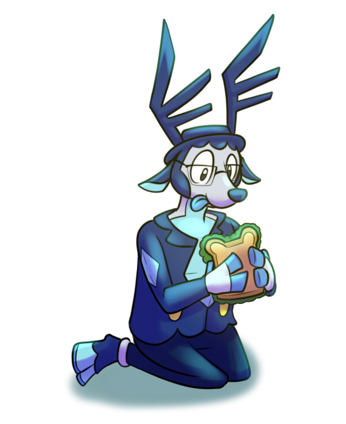
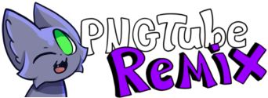
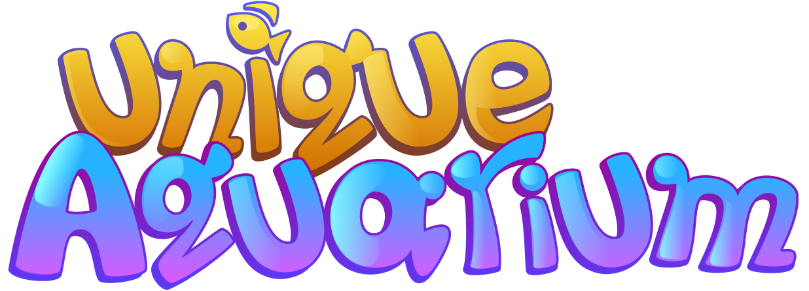

A PNGTUbing (PuppeTubing/ PaperDollTubing) software for Windows and Linux. Full free and open-source and made using the Godot Game Engine!
Includes layer support, 3 object types; Sprites, Appendages and Folders. Has different options for Follow Movements including mouse and controller. Websocket support too!

An Aquarium game similar to early 2000s/ 2010s mobile and Facebook games. You can create your own personal aquarium, decorate, change wallpaper and bedding.
Includes breeding and taking care of the fish too! Still currently in early stages, but playable.
(V1.0.7)
New Updates!
- 5 New Fish/ Creatures added!
- More Decor, Wallpaper and Bedding options added.
- General Bug fixes and UI improvements; Moving Decor mode improved
- Some typo fixes.
- Partial Translations for Spanish and French.
Note for Macos: If you opened it and said app is damaged. Don't worry, Watch this!